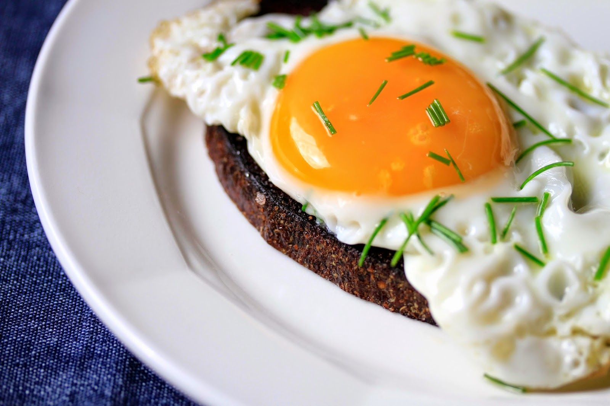

soola
30g võid
4 viilu leiba
Kuumus maksi, pannile võid, et kogu pann oleks kaetud.
Muna pannile ja prae umbes 3min. NP! Ära pööra muna.
Lisada praadimise ajal soola
Härjasilmal on munakollane vedel.
Serveerida leival.
Korda iga munaga, kui pann ei mahuta mittud korraga.
Hind: 1.4 eurot | Portsjonid: 2 | Hind portsjoni kohta: 0.7eur | Valmistusaeg: 10min
Koostisosad:
4 munasoola
30g võid
4 viilu leiba
Valmistamise juhised:
Viska muna kaussi puruks ja eemalda koored.Kuumus maksi, pannile võid, et kogu pann oleks kaetud.
Muna pannile ja prae umbes 3min. NP! Ära pööra muna.
Lisada praadimise ajal soola
Härjasilmal on munakollane vedel.
Serveerida leival.
Korda iga munaga, kui pann ei mahuta mittud korraga.